PinchFun: Designing a child-parent cooperative game for fine motor skills training
#assistive technology #child-computer interaction
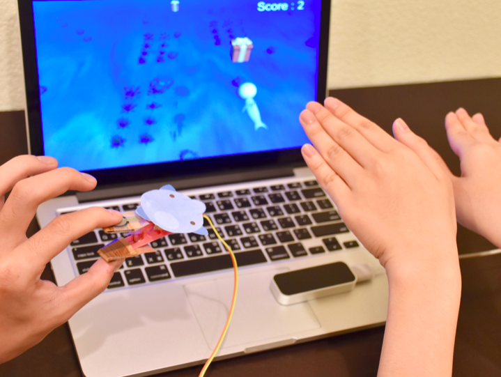
"Fine motor skills" are important for children to develop before six years old; early intervention and training can improve children's performance. However, the current training techniques bore children easily; also, parents find it difficult to continue at home.
To address these issues, we designed and built a child-parent cooperative game to support fine motor training for preschool children ages 4 to 6. I conducted the evaluation to understand how collaborative gaming can enhance parents’ involvement & children’s engagement to help improve children’s fine motor skills training effect.
Project Logistics
My Role: User research, interaction design, prototyping
Team: I-Fang Wang, Dennis Wang, Radian Cheng
This project was originally a lecture project that all members proposed the research subject, conducted the research, design, prototypes and made decisions and features together thoroughly. I further conducted twelve evaluation through co-design sessions to understand our product in the home context.
Background Research
"Fine motor skills" are crucial for children to develop before six years old, for these skills are essential for performing self-care and academic activities. Developmental delay children can make progress through early intervention, e.g. training at institutions and the continued training at home, to improve their performance of fine motor skills; past research also suggests parental involvement can also make the training more effective.
However, from the field observation in the early invention center and interviews with occupational therapists and parents, we found that...
Current training techniques are monotone and bore children in a short while.
Parents find it a problem to continue the training at home for it takes time and effort to prepare the tool and environment for training.
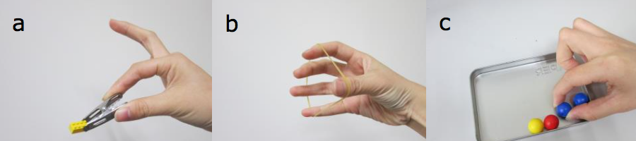
Fine motor skills are coordination of the small muscles movements involving the small and precise movement of the thumb, fingers, hand and wrist movements, which are crucial for preschool children to develop before six, for these skills are essential for performing self-care and academic activities.
So, How do we make the training more engaging and more accessible to continue at home?
Project Outcome
We design the training process into an interactive game, PinchFun, to improve the training effect of fine motor skills. This game is designed based on several idea testing and iterations.
PinchFun is a cooperative game that encourages training through play, which supports fine motor training for preschool children (ages four to six). Parents can collaborate with the child to achieve the game goal.
To entertain and attract children, PinchFun integrates the tangible controller and the virtual interactive game to optimize learning impact and gaming experience. To enhance parents involvement and make the game more immersive, the game mission is designed to be completed cooperatively.
Hi-Fidelity Prototype
Video: The hi-fidelity Prototype casting the latest design of PinchFun
Narrative
Storytelling is one of the main ways to make games engaging; we, therefore, brainstormed a theme and also a background story for the game. The theme of the game is a marine world, in which the main character Amo is visiting a friend who lives far, far away. Amo blows the bubble all the way to collect as many gifts as possible for the friend. There are a total of 20 gifts could be collected on Amo’s way.
Cooperative
The child and parents collect the gifts together. The game has a two-access point controlling method to control the same game character, Amo. One player controls the dolphin’s swimming movement and the position using Leap motion controller, while the other is in charge of pinching the FSR-attached clothespin, which controls the timing and the size of the bubble blown by the dolphin to collect the gifts. This design aims to transform the role of parents from advisor to teammate and to provide an easier setup to continue the training at home.
Encourage Repetitive Pinch and Release
"Repetition" is one of the primary metrics also a reliable indicator of success in the traditional training method. To encourage children to pinch and release repeatedly, we made a design that the bubble would burst each time when the dolphin successfully acquired the gift. The audio of blowing bubble would also stop to indicate the bubble is disappeared. When the bubble disappears, children have to release and pinch again to blow a new bubble to collect the gifts ahead. Children’s fine motor skills can be trained by repetitively pinching and releasing the fingers with the precise control of the pressure of each pinch with their small muscles.
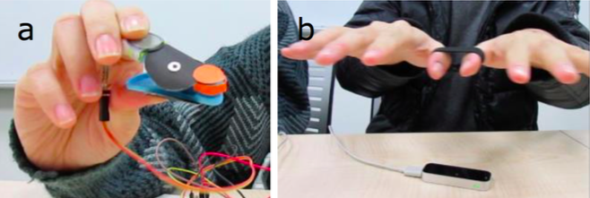
(a) Force-sensitive resistor (FSR) on the clothespin detects the level of pressure of fingers, and (b) Leap motion controller recognizes the hand position.
Two players need to cooperate to collect the gift on the exact timing and the exact position — The one who controls the Leap motion has to make the dolphin swim to the right position, while the other one controls the clothespin to pinch the clothespin repeatedly and accordingly to blow the bubbles to match the size of the gift to acquire the gifts.
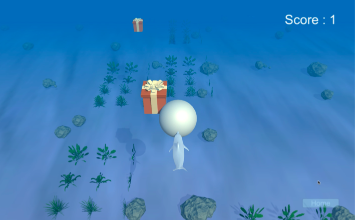
The main Game screen of PinchFun is a dolphin blowing bubbles. One player is in charge of the left/right movement, while the other player is in charge of blowing the bubble.
How did we get here?
"Ideate, Build prototypes, Test, and Fail; Revisited the problem, Build new prototypes, and Validate again"
Prototyping, Testing, and again
At the beginning, the team brainstormed several design concepts and chose to adopt a common tool of traiditional training of fine motor skills -- the clothespin.
Lo-fi Prototyping and Testing
The team built lo-fi prototypes using basic circuits, Arduino, and Processing on iPad, and then tested these concept with the children from two special schools.
However, for the very first version, the child has to hold the eletric element with the clothespin to play with the digital story book. although the children enjoyed the game a lot, they tend to press the screen directly with their fingers.
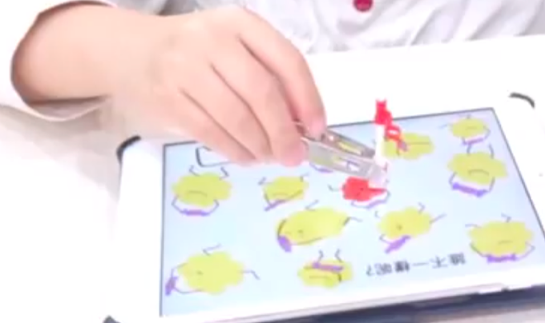
The very first prototype was a digital story book, which adopted clothespin, eletric capacity elements, and iPad.
The team then brainstormed again and came up with a new idea that could elicit the interaction with the clothespin solely. As the children pinch harder, there would be a light and sound effect. This prototype enabled the child to explore how different pressure led to different feedbacks. The children loved the interaction and showed excitement, however, they could not understand why to press the clothespin and got bored in a short while.
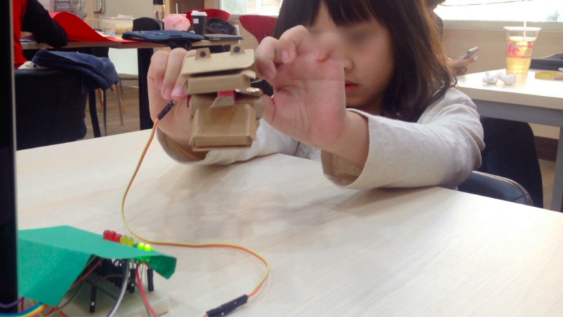
Preliminary concept testing. This prototype uses crocodile on the clothepin with sound and lights effect.
Building Mid-Fi Prototype & Testing again
The team then revisited the design objectives together -- A better design is needed to encourage the repetitive and more precise pinch. Also, considering the at-home training context, we tried to include the parents in the design.
We brainstormed a more completed game flow, and built a mid-fi prototype using Unity3D, basic circuits, and Arduino. In this prototype, there are two players in the game, both using hands and fingers to control the main character; they need to cooperate to play the game. We also added some narrative elements in the game to lead the player to do the pinch naturally.
Video: Mid-Fi Prototype
The game was designed and iterated once based on preliminary testing sessions with three preschool children and guerilla testing at Taipei Zoo. We conduct several user evaluations in two special schools in Taipei. In the preliminary study, children showed excitement during gameplay; they would react according to each other’s performance and stay more focused on the game than in traditional training.
However, from the mid-fi prototype testing, we found that the children would keep pinching the clip & they tend to press very hard to make the biggest bubble. However, the training is more effective when children do repetitive pinch & children are able to control the force precisely. Accordingly, we did two major design iterations and developed the 2nd prototype.
Iteration: Encourage the child to do "repetitive" & precise pinch
Encourages repetitive pinch
The bubble would burst as a gift be collected, therefore a child has to pinch again to blow a new bubble.
The bubble would disappear when the dolphin collects the gift; to collect the gifts ahead, the children has to pinch again to blow a new bubble, which encourages the repetitive pinch.
Repetition is leveraged to encourage children to pinch and release repeatedly. Repetition is one of the primary metrics also a reliable indicator of success in the traditional training method; children are given tasks such as clamping many beans in traditional training. To encourage repetitive pinch and release, we design our bubble to disappear each time the dolphin blows a bubble to successfully acquired the gift. The audio of blowing bubble would also stop to indicate the bubble is disappeared.
When the bubble disappears, children have to release and pinch again to blow a new bubble to collect the gifts ahead. Children’s fine motor skills can be trained by repetitively pinching and releasing the fingers with the precise control of the pressure of each pinch with their small muscles.
The game maps each pinch to the game character to training a more refined control of finger
Gifts are in two sizes. Different size of bubble collects different size of the gift.
The clothespin with FSR detects the level of pressure of fingers and each pinch is mapped to the bubble blown by the dolphin. The clothespin employed in the game provides resistance, which trains small muscles within the palm that controls the more refined movements of the thumb and fingers. Pinching the clothespin would make the dolphin blow bubbles. The bubble blown by pinching would appear in different size according to the level of force. In addition to the visual effect, the pitch of the audio effect of blowing bubble would also change accordingly to indicate the process of bubble blowing; the pitch is higher as the level of pinch is harder.
This mechanism encourages children to learn force control by exploring force level and the corresponding visual and audio feedback. The gifts in the game would appear in two different sizes: Normal and Large. Normal size gifts could be collected through an at least minimum level of pinching, while the large-sized gifts require the maximum level of pinching to collect. If the gift were touched but failed to be collected (the bubble ceased to appear, or the size is wrong), a small sound effect indicating failure would appear along with the visual effect of the gift sinking to the sea bottom. Children, therefore, could explore and match the size of a bubble to the size of a gift with sensory guidance. In order to successfully acquired the different size of gifts, they have to press the clothespin with different level of forces; their more refined control of small muscles would be trained through this process.
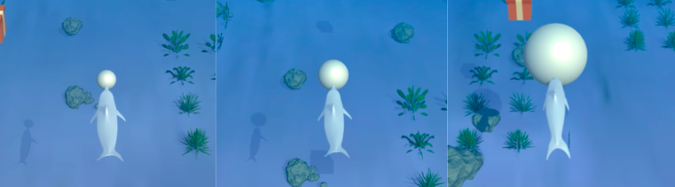
The different force applying on the clothespin would make the dolphin blow bubbles in different sizes
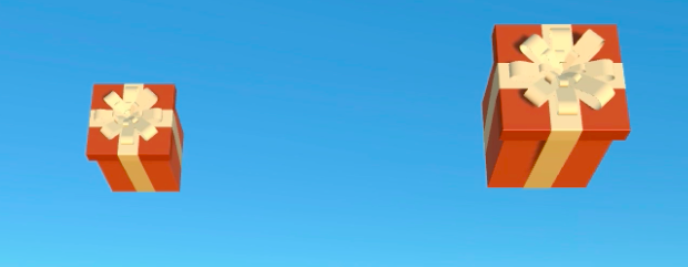
The gifts are in two different sizes: Normal (left) and Large (right)
Evaluation: Understand the Game in the Home Context
To understand how the design would be in the real scenario, I further conducted the evaluation at the participant’s home to understand the game in the home context.
Through the evaluation, we want to know...
Can these game mechanisms increase engagement in fine motor skill training?
Can these game mechanisms encourage children to repetitive pinch their fingers and precisely control the refined force of small muscles?
How does in-home co-play training with these game mechanism affect children and parents' engagement?
Participants
12 child-parent co-play & evaluation sessions
13 families -- 4 boys / 11 girls + their parent (some sessions include their older or younger siblings)
The study is conducted at their home @ Taipei City & New Taipei City.
Evaluation Process
Activity 0: Introduction
When meeting the children, I briefly introduced myself and have parents and children consent on the data use and how their opinions and drawings would contribute to this research. The design goals were introduced: designing a game to train the finger force of 4 to 6 years old children just like them; I also explain the consequence of the inability of controlling the finger force or weak finger leading to difficulties in writing and daily activities.
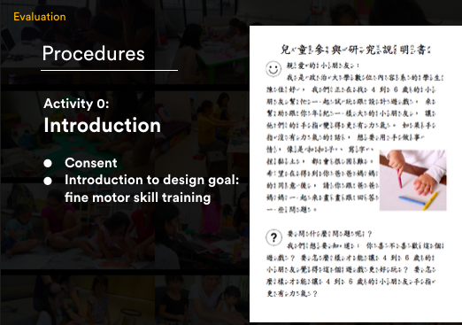
Activity 0: Consent and Introduction. The consent form annotated with Mandarin Phonetic Symbols (Zhuyin).
Activity 1: Warmup and Gameplay
The study is designed constructively in order to make it easier for younger children to follow. Throughout the design process, the adult researcher asks questions based on their conversation and drawings to encourage them to express their thoughts in detail. Pastels, color markers, A4-sized, and 8K-sized papers were provided.
The session starts with a warm-up activity which children and a parent took turns to share their favorite toys by describing and drawing the toy. Then we asked the children if they would like to play the game. We recapped our design goal again before we introduced the PinchFun system by asking them to try applying a force on the clothespin in the practice theme of the game.
After the children pressed the clothespin to blow the bubble, we asked the parent to join the game to swim with the children, i.e. to control the Leap Motion. After brief practicing to collect the gift, we told the background story of dolphin collecting gifts and visiting the friend and then started the game in normal mode. After several rounds of play, we asked the children to switch position which they swim (Leap Motion) and parent blow the bubble (clothespin). After several rounds of play, we then asked them if they want to play the harder level which large gifts would appear. If they said yes, we would then let them play the advanced mode.
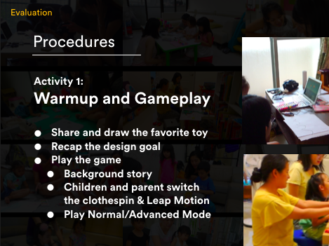
Activity 1: Warmup and Gameplay.
Activity 2: Evaluation and Co-design
After the gameplay session, we then proceed with a drawing session to evaluate PinchFun. We ask the parent and the children to draw something about the game, including their likes and dislikes about the game. We also asked them to draw themselves playing the game and describe what they’ve done in the game, to understand their thoughts about the game and how they enjoy the game.
We then asked them how they would change the game and asked them to draw accordingly, before we primed them to think if they wanted to create a new game to train fine motor skills and asked them to explain how to play the new game they came up with. After the parent and children provided their opinions, we asked them to draw a mixed idea on a big paper and explain their idea. Ideas were physically rearranged to help them discuss how their ideas can be integrated.
Some of the questions asked are...
What element do you remember from the game?
Do you remember / like the dolphin / the sea / the seaweed / the rock / the small gift / the big gift? What did you do in the game?
What do you like about the game? What don’t you like about the game?
What do you want to add to this game? If you don’t like ____, what do you want to replace it with?
If you could change something about this game, what would it be?
If you could build your own fine motor training game, what would it be?
What would you do if you have this game in your home?
Where do you want to put this game at? When are you going to play this?
Whom do you want to play this game with? How do you play with your brother/sister/mom/dad/friends in this game? What would you do? What would they do?
What did we do today? Why are we doing these activities?
Why are we drawing/playing games? What’s the purpose of this game?
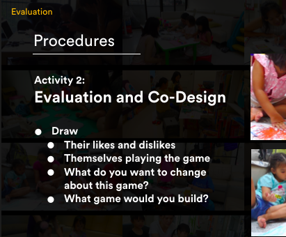
Activity 2: Evaluation and Co-design
Besides the observation by the researcher, I also interviewed the children several context-related questions and evaluated the fun and engagement using the Fun Toolkit (J. C. Read & MacFarlane, 2006) including Smileyometer to measure reported fun and Again-Again table to measure the engagement in the game and each design activity quantitatively; we also primed them to explain the reason for the answers to each question.
The questions in the again-again table include...
Draw and share your own toy again? (Yes/No/Maybe)
Play this game again? (Yes/No/Maybe)
Play this game with mom again? (Yes/No/Maybe)
Help the dolphin to blow bubbles and collect the gifts again? (Yes/No/Maybe)
Help the dolphin to swim around again? (Yes/No/Maybe)
Draw your own game with mom again? (Yes/No/Maybe)
At the end of the design activities, we ask them again if they remember the design goal. When they finished all the activities we would then reward them with a certificate with their name and parent’s name on and a set of stickers. While children were choosing stickers from the sticker sets, we would interview the parent about their current training techniques and their opinions on the game and the co-design activities.
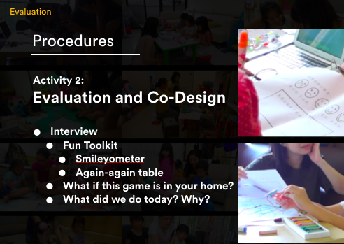
Activity 2: Evaluation and Co-design
Adopt the co-design methodology
For our study, we chose to adopt the co-design methodology along with co-play among each of the thirteen child-parent groups, to understand how children and their parents think about PinchFun.
Participatory Design (PD) is a method to bring users and designers together to co-create new technologies. Children can join the design process as an equal stakeholder and co-work with the adults in the design team to share their opinions and their expert knowledge of "being kids". Creative PD techniques have been shown to elicit expressive ideas which were valuable for design.
When children provide their design ideas, PD makes it possible to understand their feedback toward technology. Previous research also suggested that parent-child co-design can give us a chance to observe families engaged in the process of co-design, which reveals new insights into the relationships, tensions, and motivations of families, helping us to understand better how the technology fits in the at- home training context (Yip et al., 2016).
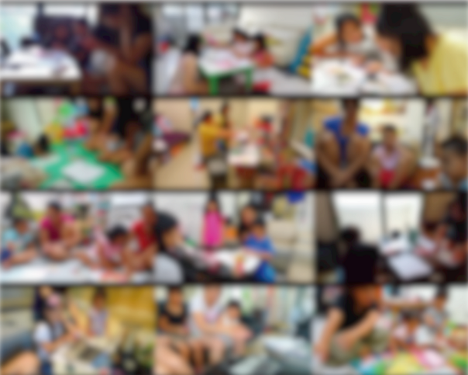
13 families were studies in 12 sessions.
Research Findings & Insights
All sessions were video and audio recorded. For data analysis, the researcher recursively discusses emergent theme with the research team. Using these emergent themes, we would repeatedly re-watch the recorded videos of each session and pull out examples of behaviors and illustrate each theme. We also went through the drawings from the co-design session and coded the findings to discuss their likes, dislikes and design ideas in common. Using these examples, we conducted a collaborative affinity diagramming session to cluster examples into cross-cutting themes.
Children’s Engagement
Most children showed their interest in playing PinchFun again and again. Twelve of them offered an affirmative answer when being asked "Do you want to play this game again? ‘Yes,’ ‘No’ or ‘I don’t know’?" from the question in Again-Again Table. Also, from the co-design drawing sessions, we saw child participants’ engagement in this game as they can recall and repeat the elements in PinchFun well and actively proposed many ideas to the game.
Child: "My fingers are sore, but I want to play again,"
(From study session 10th)
Child-Parent Joint Engagement
A mutual engagement between the child and parent was observed in the gameplay sessions. In the gameplay activity, we saw parent act as a collaborator instead of an overseer in the game-based training. Sharing the same goal enabled conversation during cooperation. For example, children and parent would take turn guiding each other to better collaborate. Some children and parents also discussed the game strategies to earn more gifts.
Parent (Leap motion): "… Don’t acquire the gift yet. Do not press the clip until I say so."
Child (clothespin): "I would release the clip when I collect the gift. And I’ll keep the clip pressed and wait for the moment to come"
They would also encourage each other right before specific movement should be made, e.g. pinch the clothespin, or right after they didn’t do the movement precisely and missed the gift. They also celebrated their success when they reached a higher score and comfort each other when they get a relatively low score.
(After the game)
Child: "Wow! I was so good at this! You were so good at this. We are SO GREAT!"
When the parents were interviewed about the cooperative gameplay, most of them think it "a nice thing to achieve something with the children". As for the children, the overall feedback from the children was that they enjoyed playing the game with their parents; all of them wanted to play the game with their mom again. A child participant drew themselves smiling while playing the game.
Parent: "It’s really nice to do something together. We have overcome something together."
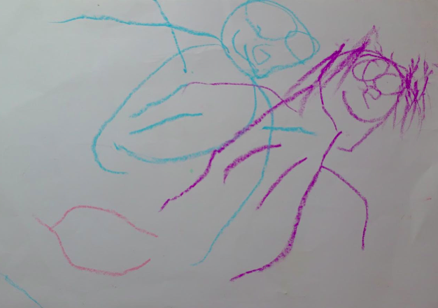
A child participant drew themselves smiling while playing the game. (From study session 3rd)
Fine motor skill training : Learning the repetitive pinch-and-release mechanism
Children were able to learn the pinch and release movement in their first or second round of gameplay. Half of them don’t understand it for their first time playing the game. They were confused and a bit frustrated, for they pinched the clothespin hard, but the bubble didn’t show on the screen. Some adult participants gave their child some hints: "Why not try to release and pinch again?" , alternatively a more direct guidance to blow a bubble: "Release and pinch again. Your bubble has disappeared. You have to do it again to blow a new bubble."
With or without these control hints, all the children were able to learn the pinch-release mechanism and they would follow this mechanism by the end of the second round — They pinch and release again and again (And Yes! that’s our design goal to have them repeat this!). Their strategy of blowing a new bubble differs. Some of them released their pinch right after they collected a gift and re-pinched when they saw a new gift approaching; while the others keep pinching the clothespin and when they saw a gift approaching they immediately released and re-pinched.
Increased engagement through storytelling
From the co-design sessions, we found that storytelling through game enhanced the engagement in the training process. Narrative game elements in the game such as gifts and the mission of collecting gifts for the friend provided a background story for parents and children to tell new stories.
Creating stories made them stay focused on the game. For example, in the 13th study session, when the child asked what was inside the gift, her mom replied, "Let’s play again to see what’s inside!" before the child agreed to play again immediately.
In another case in the 1st study session, when the child was distracted and walked away, her mom dressed her up with a fairy outfit and told her to "swim back to the ocean again and collect more gifts with her magic power", she ran back to the game immediately and chanted each time when she collected a gift.
Apart from enhancing the engagement, storytelling was observed to be a way to lessen the frustration. For example, in the 4th study session, after a game with a very low score, the parent comforts the child by telling her "Maybe the dolphin only have one friend. That (collecting four gifts) is enough for them!". The re-interpreted story did affect the sense of achievement and turned the failure into a fulfillment of the mission.
Storytelling might also make the repetitive task more engaging by adding various characters, scenes, predefined stories and other narrative elements in various stages. Narrative elements provide a space for them to create new stories. Children and parents can tell different stories every time they play this game, just like they would read the same storybook repetitively by telling the story in different ways.
Children have their own way to create meaning, explore and play with the game; they are “competent interpreters of their everyday worlds” and they’re capable of creating their own rules for successful engagement through play (Danby & Farrell, 2005).
Sense of Achievement & Goal-setting
In the game, the gifts are in two different sizes: the normal one and the big one. As the game ends, the End-game result screen would show the total gifts one after another; the gifts in the end-game screen are also in two different sizes, indicating the size of the gifts they collected. Our intentions of designing the gift in different sizes were to support the training of force control of the small muscles. We saw the sense of achievement and goal-setting behavior in children, where they reacted in various way at the end of the game. Half of the child participants shouted "wow!" and their eyes lit up at the sight of the large size gifts in the End-game result screen.
Parent: "Are you tired? Are your fingers sore?"
Child: "Yeah." (still holding her dolphin pin)
Parent: "Do you want to take a rest?"
Child: "I want to play again. I want to collect 20 gifts. I would like to challenge myself."
(From study session 13th)
Supporting multiplayer and individual play in the home context
Our studies found that tensions between family members would occur when applying physical training at home. Some tensions were observed during our evaluation sessions in the home context.
For example, when there is more than one child in a family, they would fight over playing with their mom.
(From study session 1)
The sister volunteered to control the clothespin first. She invited her mom to join her and Mom agreed. Meanwhile, her brother shouted, "I want to play too!"
Mom replied, "You two can switch to play the game. Let’s have your sister play the first round, and it will be your turn to play." The brother immediately ran back to his playroom and glared at his mother and sister behind the door crack.
(From study session 9)
The sister was playing, the brother who watched his sibling playing also made a repetitive pinch-release gesture (a-ok gesture) even when he was not holding any clothespin on his fingers.
In some cases, parents commented that they sometimes have limited time to accompany the child.
Researcher: "Whom do you want to play this game with?"
Child: "Mommy (Daddy)... but Mom (or Dad) doesn’t have time to play with me"
(From two study sessions)
To make the game design better support at-home training, a dynamic home context should be considered. To enable a different number of players playing together, in the future design, flexible game design to support multi-player and individual play may be considered, so that the training can be done with or without parents and other siblings. This may help dissolve the tension between siblings who fight over the game and the tension between parent’s limited time and the companionship.
Two children shared their ideas of “playing with an imaginary friend”; this also edified us to consider exploring the design of a virtual companion, e.g. a bot, to support individual play in the game-based physical training. A further observation should be done in the playing alone context since all our research was done with researchers or parents’ company.
Output and Impact
We were awarded ‘Winner’ in ACM SIGCHI 2016 Student Game Competition — Games for a purpose. We host a demo booth for 3 days to share our game design and research findings to CHI participants. Our team member, Dennis, also did a presentation to CHI participants. We also authored a CHI extended abstract to share our project.
We shared and discussed our research insights and suggestions on how to better introduce technologies to child development training with the early invention centers and occupational therapists.
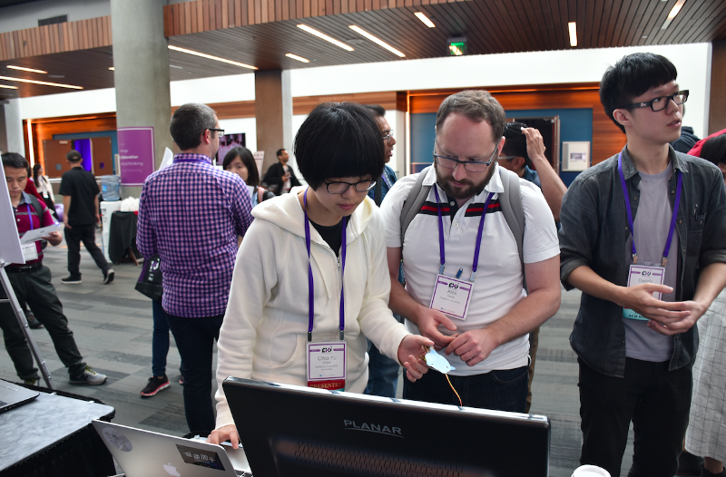
ACM CHI 2016 Student Game Competition in San Jose, California. I was demonstrating the game to a participant from Canada.
Limitation & Future work
The study is limited in that we only evaluated our design during twelve two-hour sessions, because of the time & budget limit. Future work remains to understand if this game-based design can enhance engagement in training in a long-term; also, the long-term occupational evaluation needs to be conducted to examine the effect of this therapy. When I was planning the evaluation, I've also considered adopting the diary study along with the cultural probe to better understand how our design creates a relationship with the family lives.
Besides, the design currently focused on strengthening the small muscles of hands and using pads of thumb and index finger. If the project still goes on, the future design should incorporate more motor skills.
Our study has seen enhanced engagement in integrating this fine motor skills training with a cooperative game, and we’ve gained many creative ideas from children and parents, providing an opportunity for us to explore how other fine motor skills training may transform into game-based cooperative physical training for future work!
 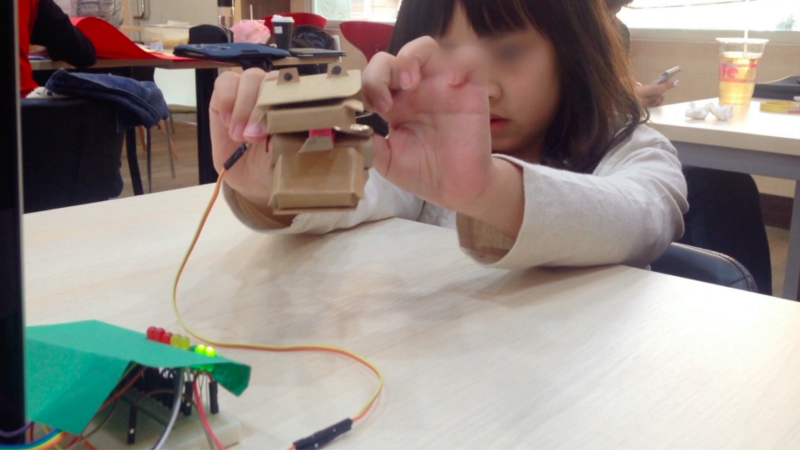
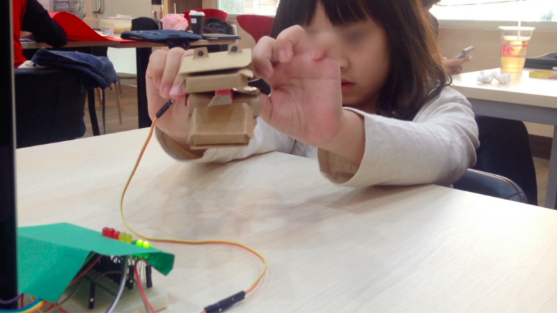